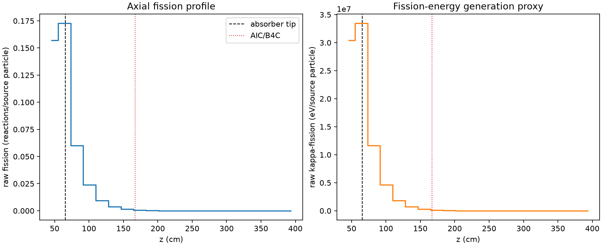
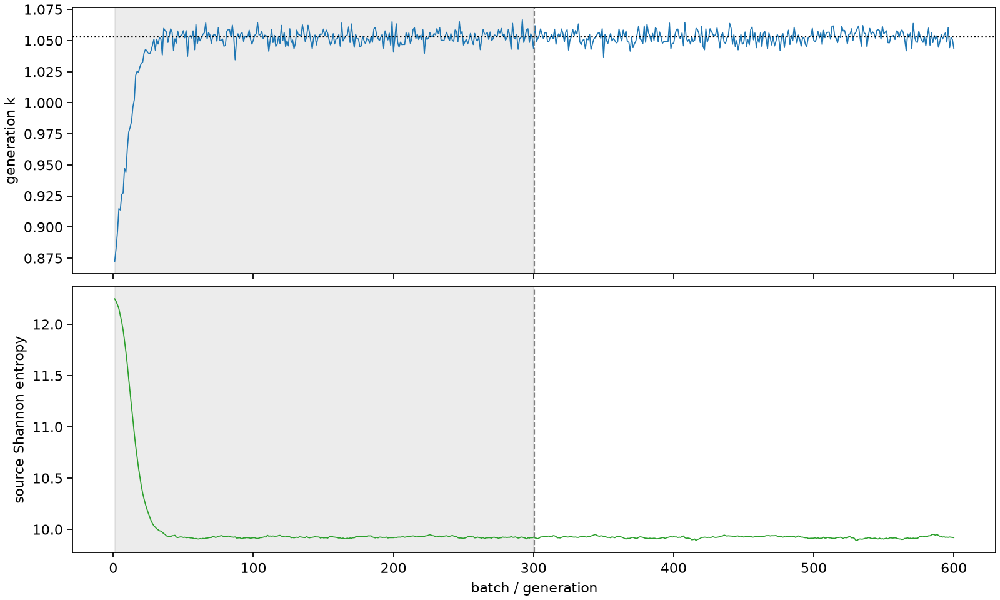

| field | value |
|---|---|
| experiment | V2-STAGE_256_OGRENCI_01-0023 |
| k | 1.052712317607962 |
| MC standard error | 0.00019057373691660262 |
| seconds | 927.5566719710187 |
| acceptance | not_assessed |
| convergence | review_required |
Completed is output integrity only; physical and statistical review required. Zero tallies do not prove zero production or zero uncertainty.
| diagnostic | value |
|---|---|
| geometric fuel voxels | 5280 |
| zero fission tally voxels | 1339 |
| low signal fuel voxels | 2850 |
| low signal fission share | 0.00016725715913130555 |
| low signal kappa share | 0.00016730157806421023 |
| important fission share | 0.9501007381427524 |
| previous filter included | 2430 |
| duration estimate s | 1562.5173488400023 |
| actual minus estimate s | -634.9606768689837 |
| fission relative MC error | statistics |
|---|---|
| all_geometric_fuel | {"voxels": 5280, "positive_mean_voxels": 3941, "zero_mean_voxels": 1339, "undefined_relative_error_voxels": 1339, "median": 0.07515880789596574, "p95": 0.9743150637838273, "maximum": 1.0000000000000002} |
| low_signal | {"voxels": 2850, "positive_mean_voxels": 1511, "zero_mean_voxels": 1339, "undefined_relative_error_voxels": 1339, "median": 0.5829569570139448, "p95": 1.0, "maximum": 1.0000000000000002} |
| important_95pct | {"voxels": 981, "positive_mean_voxels": 981, "zero_mean_voxels": 0, "undefined_relative_error_voxels": 0, "median": 0.0048401572544373925, "p95": 0.011305504303257686, "maximum": 0.012398243040110352} |
| outside_previous_filter | {"voxels": 2850, "positive_mean_voxels": 1511, "zero_mean_voxels": 1339, "undefined_relative_error_voxels": 1339, "median": 0.5829569570139448, "p95": 1.0, "maximum": 1.0000000000000002} |
| kappa_fission relative MC error | statistics |
|---|---|
| all_geometric_fuel | {"voxels": 5280, "positive_mean_voxels": 3941, "zero_mean_voxels": 1339, "undefined_relative_error_voxels": 1339, "median": 0.07505843660352485, "p95": 0.9743088725525488, "maximum": 1.0000000000000002} |
| low_signal | {"voxels": 2850, "positive_mean_voxels": 1511, "zero_mean_voxels": 1339, "undefined_relative_error_voxels": 1339, "median": 0.5822969749021679, "p95": 1.0, "maximum": 1.0000000000000002} |
| important_95pct | {"voxels": 981, "positive_mean_voxels": 981, "zero_mean_voxels": 0, "undefined_relative_error_voxels": 0, "median": 0.00483461888514682, "p95": 0.011289119284735999, "maximum": 0.012383185242149866} |
| outside_previous_filter | {"voxels": 2850, "positive_mean_voxels": 1511, "zero_mean_voxels": 1339, "undefined_relative_error_voxels": 1339, "median": 0.5822969749021679, "p95": 1.0, "maximum": 1.0000000000000002} |
| axial bin | fission share | kappa-fission share |
|---|---|---|
| 1 | 0.3656324120205045 | 0.3656033372877187 |
| 2 | 0.40206157415024435 | 0.4020480602219879 |
| 3 | 0.14019396913439175 | 0.14021919522459916 |
| 4 | 0.05582668825743353 | 0.055837042080412846 |
| 5 | 0.022256819527795697 | 0.02226100621121291 |
| 6 | 0.008841763414818233 | 0.008843432502290064 |
| 7 | 0.0034342269113711637 | 0.003434920853639534 |
| 8 | 0.0011802300733532618 | 0.001180521363584928 |
| 9 | 0.00038031978355921155 | 0.0003804316529983472 |
| 10 | 0.0001257751922177593 | 0.0001258145253093068 |
| 11 | 3.970224573671807e-05 | 3.97154714546002e-05 |
| 12 | 1.4696508879315684e-05 | 1.4698629977039282e-05 |
| 13 | 7.1428048415809415e-06 | 7.143769740913473e-06 |
| 14 | 3.4403170061452077e-06 | 3.4402070444499586e-06 |
| 15 | 9.76513265431489e-07 | 9.767174181557295e-07 |
| 16 | 2.488525029784025e-07 | 2.49007419553844e-07 |
| 17 | 1.4292078526220113e-08 | 1.4273191824082915e-08 |
| 18 | 0.0 | 0.0 |
| 19 | 0.0 | 0.0 |
| 20 | 0.0 | 0.0 |
Histories include the inactive-to-active transition at batch 300. kappa-fission approximates fission energy production, not total heat deposition.

